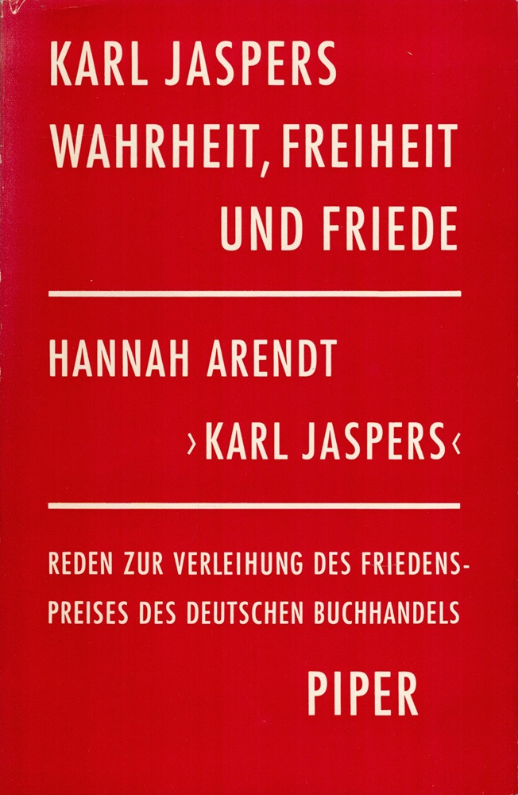

21:22 · 1 OPERA
La decisione politica.
Il filo del discorso
Il commento a una conferenza stampa di Angela Merkel del gennaio 2021 introduce il rapporto fra decisione politica, consulenza scientifica e responsabilità del potere. Dr Divago parte da un esempio sul principio di autorità e interpreta una risposta della cancelliera come una dichiarazione rilevante sulla natura delle scelte pubbliche. Il passaggio da scienza a scientismo, nella sua lettura, comporta una rinuncia alla verifica autonoma. Un discorso di Karl Jaspers sul rapporto fra verità e libertà offre il riferimento filosofico centrale. Il finale confronta il linguaggio della protezione con un documento storico sui Navajo e torna alla richiesta di domande pubbliche sulle restrizioni.
I libri nel discorso

Wahrheit, Freiheit und Friede
Identificazione probabile
Copertina del volume dei due discorsi: Piper · Monaco · 1958 · con la laudatio di Hannah Arendt
Copertina del volume Piper del 1958: contiene Wahrheit, Freiheit und Friede di Jaspers e Karl Jaspers di Hannah Arendt. Il titolo è stato controllato anche nel frontespizio fotografato; l’edizione effettivamente consultata nel video non è accertata.
Jaspers, il 1958 e Piper sono nominati prima della lettura sul rapporto fra verità e libertà; il titolo è identificato per riscontro, non annunciato nel parlato.
Passaggio 12:01 ↗ · Fonti e libro ↗Minutaggi ricavati da testi automatici, da riascoltare. Le identificazioni probabili sono segnalate accanto ai libri.